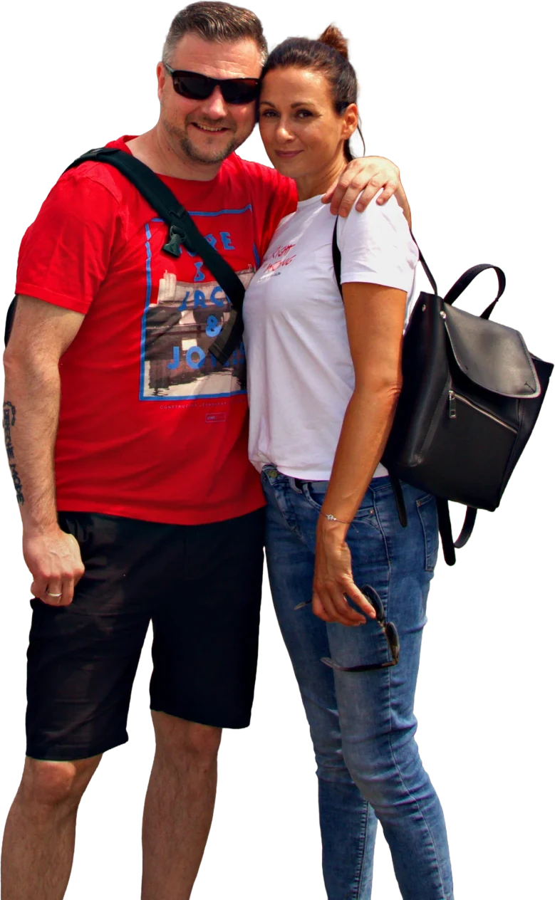

Operator & Co-PilotinOperator & co-pilot
Bei mir laufen melancholische Synthesizer-Sounds in Dauerschleife – meine Co-Pilotin hat das all die Jahre tapfer mitgemacht und ist bis heute der schönste und vollkommenste Song in meiner Playlist.Melancholic synthesizer sounds run on repeat at my place – my co-pilot has bravely put up with it all these years and is still the most beautiful and most perfect song on my playlist.
- KameraCamera
- Canon EOS 77D
- BrennweiteFocal
- 20 mm
- BelichtungExposure
- 1/200 s · ISO 100
- EntwicklungProcessing
- RAW → DM-Grade


Operator · Martin Co-PilotinCo-pilot · SabineMusik hat mich schon als Kleinkind begleitet und fasziniert. Zur „richtigen“ Musik habe ich aber erst während meiner Lehre als Offsetdrucker gefunden: Eines Tages drückte mir mein Lehrherr zwei Kassetten in die Hand – mit der klaren Ansage, dass ich mir die unbedingt anhören muss. Es waren „101“ von Depeche Mode und „The Circus“ von Erasure.Music has been with me and fascinated me since I was a toddler. But I only found “real” music during my apprenticeship as an offset printer: one day my master handed me two cassettes – with strict orders that I absolutely had to listen to them. They were Depeche Mode’s “101” and Erasure’s “The Circus”.
Das hat voll eingeschlagen. Beide Kassetten liefen monatelang in Dauerschleife, und von Depeche Mode habe ich die längste Zeit gesagt, dass sie den Soundtrack meines Lebens geschrieben haben. Damals begann meine tiefe, emotionale Verbundenheit mit elektronischer Musik – und Depeche Mode ist bis heute so etwas wie meine Musik-Familie.It hit me hard. Both tapes ran on repeat for months, and for the longest time I said Depeche Mode had written the soundtrack of my life. That was the start of my deep, emotional bond with electronic music – and to this day Depeche Mode is something like my musical family.
Seit den 2000ern entwickelt sich ihr Sound allerdings nicht mehr ganz in meine Richtung. Deshalb sind inzwischen VNV Nation nach vorne gerückt – genauso wie New Order, die aus Joy Division hervorgegangen sind.Since the 2000s, though, their sound hasn’t quite developed the way I’d like. That’s why VNV Nation have moved to the front lately – and so have New Order, who rose from Joy Division.
Diese Seite ist mein öffentliches Notizbuch: Was ich hier aufschreibe, muss ich nicht noch einmal herausfinden.This site is my public notebook: whatever I write down here, I don't have to figure out again.
- NameName
- Depeche/Martin
- BasisBase
- ÖsterreichAustria
- MusikMusic
- Depeche Mode · Erasure · VNV Nation · New Order · Joy Division · The Cure · Kraftwerk · Pet Shop Boys
- Genre
- Dark Wave · Synth-Pop
- 3D-Druck3D printing
- Creality K1 Max
- Plotter
- Silhouette CAMEO 5 α
- Foto & VideoPhoto & video
- DJI Mini 4 Pro · DJI Pocket 3 · Canon EOS 77D
- Smart Home
- Home Assistant
Schreib mir.Get in touch.
Fragen zu einem Projekt oder einer Datei? Am einfachsten per E-Mail.Questions about a project or a file? Email works best.